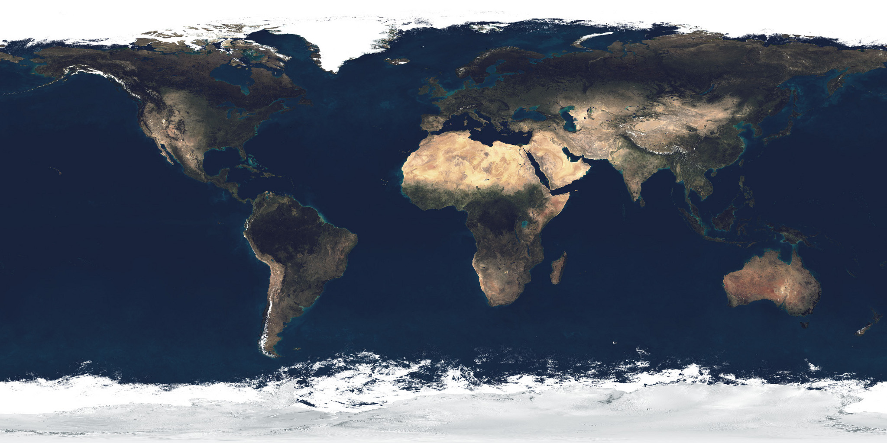

MGT 409 · Tyler Coleman
OrbitBrief
Explore the orbital environment. Ask a sourced question. Leave with a reproducible visual briefing.
Local app · dated CelesTrak snapshot · no collision-probability claims
The user
A hard explanation task
A space-club member, educator, or policy student must combine orbital elements, catalog metadata, launch context, and agency explanations to answer a simple question responsibly.
The idea
Question → scene → evidence
CelesTrak and KeepTrack already support exploration. OrbitBrief's hypothesis is the linked briefing workflow.
The app
A 3D, source-aware workspace

Earth texture + synchronized orbital markersCatalog controls, type/purpose filters, altitude bands, clickable objects, backside view, source evidence, launch/source panels, and reversible chat actions.
Agent design
One bounded analyst
The model explains; deterministic code counts, filters, propagates, and proposes reversible scene changes.
Counts, purpose filters, altitude, region snapshots, object details, collision limitation.
Dataset ID, snapshot date, source, definition, coverage, warnings.
Dataset context attached · uncertainty labeled
Scientific honesty
What it does not claim
Collision probability requires precise state vectors, uncertainty/covariance, miss distance, closest approach, and a validated method outside this prototype.
Measured tokenomics
Small bounded provider path
Measured Portkey HTTP 200 run, zero cached input, course gpt-6-luna rate sheet. Counts and globe animation are local and use no LLM tokens. At 10 runs/user/month: 100 users ≈ $0.1095 model cost; 10,000 ≈ $10.95, excluding hosting.
Safety + evidence
Useful, bounded, honest
Server-only key, loopback binding, 16 KiB request cap, 12-second model timeout, 500-token output cap, escaped chat text, no arbitrary tools, unknown values preserved, and explicit collision limitation.